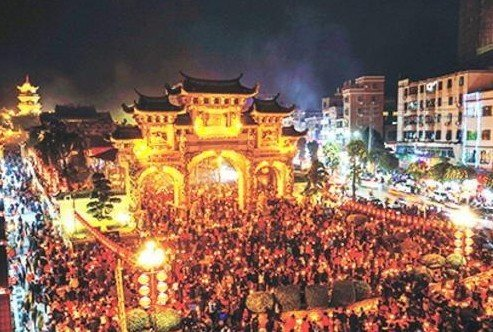
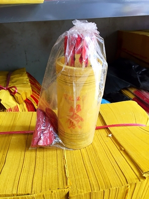
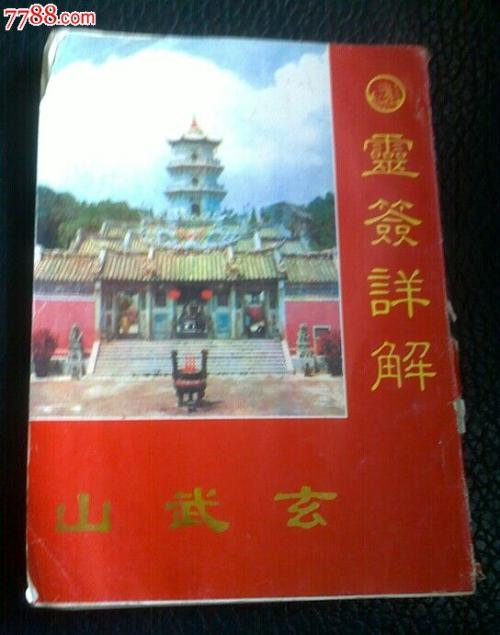
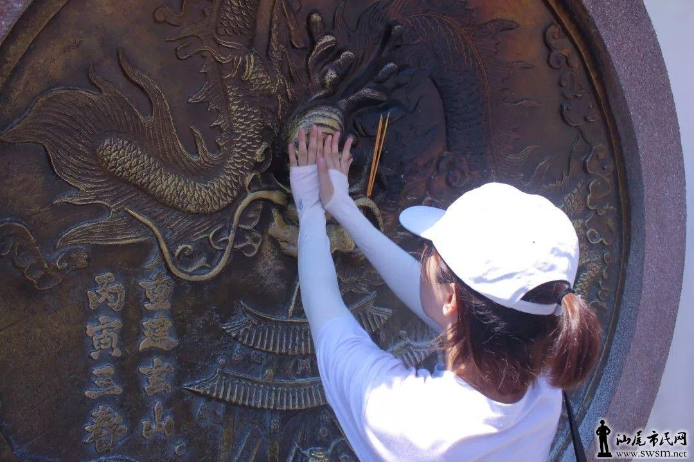

关于玄武山的民俗风情还真的是不少，不过大多数都是围绕烧香拜佛来的，我就讲几点比较主要的；。
第一个就是每年的大年初三，都会有成千上万的人去拜佛，基本上整个15万平方米的玄武山都是人挤人，很是壮观！。
以下是图片！

第二个就是每年年初的半个月里，本地的人都会去给自己的家人求签，人手一签，借此来看下新一年的走势，躲避灾害；
甚至还会有挺多外地的，广东以内的其他地区的人也会有一部分前往玄武山拜佛求签！
所求到的签佩戴一本灵签详解而得出结果！


第三个就是每年元宵节，玄武山本地的人除了吃汤圆，逛花灯以外，还会去玄武山的一面刻有龙的墙上摸上一摸，暗示来年会有好运！
